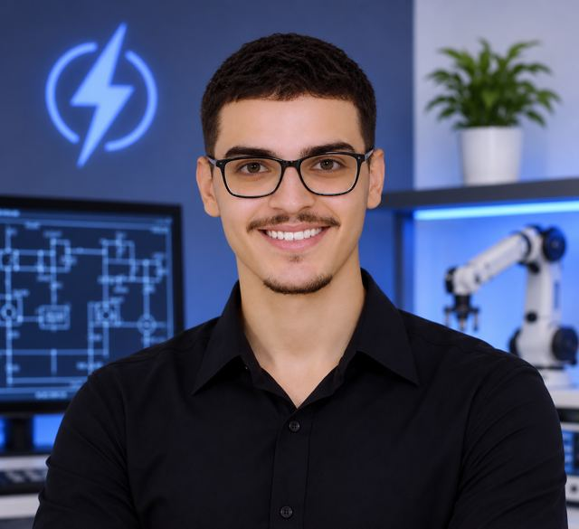
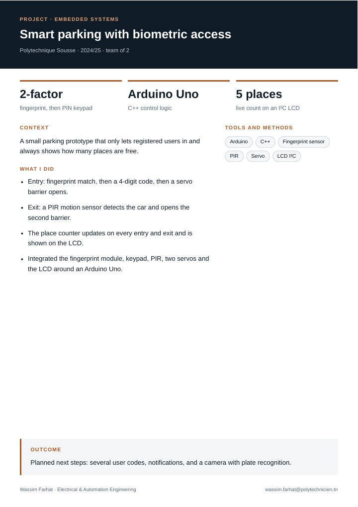
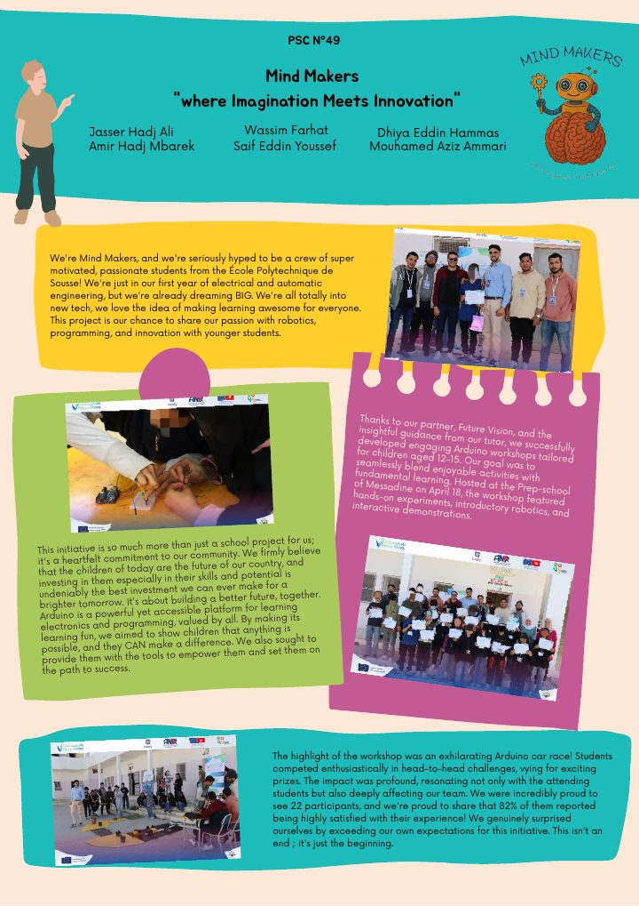

Process Engineering Intern
DRÄXLMAIER (wiring harnesses)
Traced scrap on three automated cut-and-crimp machines with weighing, MES data, Pareto, Ishikawa and AMDEC, then proposed preventive-maintenance and training actions.
Electrical & Automation Engineer
Engineering student at Polytechnique Sousse turning ideas into working systems: industrial automation, embedded IoT and solar PV. Looking for opportunities in automation, energy and smart systems, in Tunisia and abroad.
View my workGet in touch
Based in Sousse, Tunisia, I’ve worked in factories and on building sites: automating a textile production line with a Siemens PLC, building an IoT control board for a generator, analysing scrap on automated machines and following a grid-connected solar plant from survey to commissioning.
I value clear documentation, safe implementation and practical problem-solving.
Four internships. Each has a one-page summary you can open or download.
Traced scrap on three automated cut-and-crimp machines with weighing, MES data, Pareto, Ishikawa and AMDEC, then proposed preventive-maintenance and training actions.
Worked on NF C 15-100 building installations and followed a 14-module grid-tied PV plant from survey to commissioning: wiring, earthing, module fixing, structural drawings.
Designed an ESP32 board that measures, protects and remotely monitors a generator set, with six measurements, a Firebase database and an Android app.
Migrated a relay-based blow-room line to a Siemens S7-1500: GRAFCET for each machine, structured TIA Portal program, WinCC HMI and cabinet wiring diagrams.
Academic and community work, one page each.

Custom library with datasheet footprints and 3D bodies, then a multi-sheet schematic and a hand-routed PCB around an AD8630 quad op-amp.

Arduino Uno prototype with fingerprint plus PIN entry, servo barriers, PIR exit detection and a live place counter on an LCD.

Hands-on workshop for 22 students aged 12 to 15 with Future Vision and a team of six. 82% reported being highly satisfied.
From internships and projects.
Polytechnique Sousse, 2024 – present
Higher School of Science and Technology of Hammam Sousse, 2021 – 2024
MATLAB, Simulink and Simscape (MathWorks)
IT Specialist: Artificial Intelligence (Certiport)
English B2 (EF SET)
Arabic native · English advanced · French intermediate · German beginner
Open to internships, research placements and graduate programs.
wassim.farhat@polytechnicien.tnGitHub